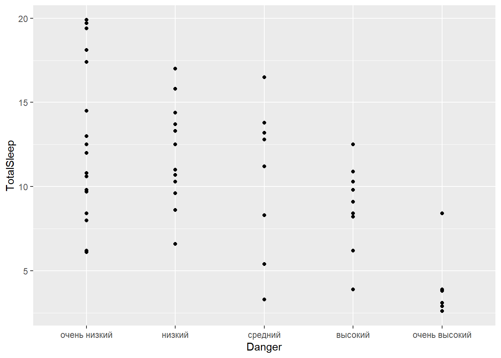

Результаты нашей работы

## Df Sum Sq Mean Sq F value Pr(>F)
## Danger 4 457.3 114.3 8.052 3.78e-05 ***
## Residuals 53 752.4 14.2
## ---
## Signif. codes: 0 '***' 0.001 '**' 0.01 '*' 0.05 '.' 0.1 ' ' 1## [1] 31 7## [1] 1 19## Tukey multiple comparisons of means
## 95% family-wise confidence level
##
## Fit: aov(formula = TotalSleep ~ Danger, data = sl)
##
## $Danger
## diff lwr upr p adj
## низкий-очень низкий -1.333333 -5.124859 2.45819223 0.8572978
## средний-очень низкий -2.773333 -6.969783 1.42311648 0.3478679
## высокий-очень низкий -4.272222 -8.615960 0.07151601 0.0559898
## очень высокий-очень низкий -9.011905 -13.751312 -4.27249780 0.0000172
## средний-низкий -1.440000 -5.845355 2.96535461 0.8867253
## высокий-низкий -2.938889 -7.484768 1.60699057 0.3700451
## очень высокий-низкий -7.678571 -12.603908 -2.75323524 0.0004844
## высокий-средний -1.498889 -6.387605 3.38982719 0.9080576
## очень высокий-средний -6.238571 -11.481992 -0.99515065 0.0121206
## очень высокий-высокий -4.739683 -10.101709 0.62234434 0.1068958